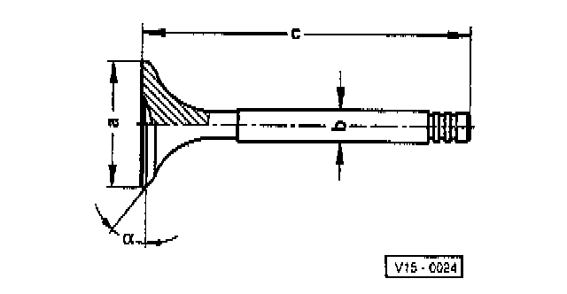

Valve: Specifications
DIMENSIONS
Dimension a
Inlet Valve 39.0 mm
Exhaust Valve 34.20 mm
Dimension b
Inlet Valve 6.97 mm
Exhaust Valve 6.95 mm
Dimension c
Inlet Valve 105.95 mm
Exhaust Valve 106.95 mm
Valve Seat Angle
Inlet Valve 45 °
Exhaust Valve 45 °